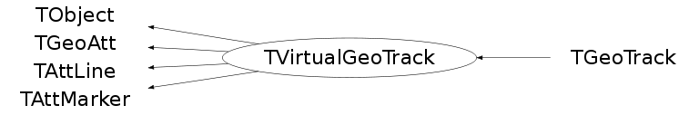

class TVirtualGeoTrack: public TObject, public TGeoAtt, public TAttLine, public TAttMarker
TVirtualGeoTrack - Base class for user-defined tracks attached to a geometry. Tracks are 3D objects made of points and they store a pointer to a TParticle. The geometry manager holds a list of all tracks that will be deleted on destruction of gGeoManager.
Function Members (Methods)
This is an abstract class, constructors will not be documented.
Look at the header to check for available constructors.
public:
protected:
| virtual void | TObject::DoError(int level, const char* location, const char* fmt, va_list va) const |
| void | TObject::MakeZombie() |
| TVirtualGeoTrack& | operator=(const TVirtualGeoTrack&) |
Data Members
public:
| enum TObject::EStatusBits { | kCanDelete | |
| kMustCleanup | ||
| kObjInCanvas | ||
| kIsReferenced | ||
| kHasUUID | ||
| kCannotPick | ||
| kNoContextMenu | ||
| kInvalidObject | ||
| }; | ||
| enum TObject::[unnamed] { | kIsOnHeap | |
| kNotDeleted | ||
| kZombie | ||
| kBitMask | ||
| kSingleKey | ||
| kOverwrite | ||
| kWriteDelete | ||
| }; | ||
| enum TGeoAtt::[unnamed] { | kBitMask | |
| }; | ||
| enum TGeoAtt::EGeoVisibilityAtt { | kVisOverride | |
| kVisNone | ||
| kVisThis | ||
| kVisDaughters | ||
| kVisOneLevel | ||
| kVisStreamed | ||
| kVisTouched | ||
| kVisOnScreen | ||
| kVisContainers | ||
| kVisOnly | ||
| kVisBranch | ||
| kVisRaytrace | ||
| }; | ||
| enum TGeoAtt::EGeoActivityAtt { | kActOverride | |
| kActNone | ||
| kActThis | ||
| kActDaughters | ||
| }; | ||
| enum TGeoAtt::EGeoOptimizationAtt { | kUseBoundingBox | |
| kUseVoxels | ||
| kUseGsord | ||
| }; | ||
| enum TGeoAtt::EGeoSavePrimitiveAtt { | kSavePrimitiveAtt | |
| kSaveNodesAtt | ||
| }; |
protected:
| UInt_t | TGeoAtt::fGeoAtt | option flags |
| Int_t | fId | track id |
| Color_t | TAttLine::fLineColor | line color |
| Style_t | TAttLine::fLineStyle | line style |
| Width_t | TAttLine::fLineWidth | line width |
| Color_t | TAttMarker::fMarkerColor | Marker color index |
| Size_t | TAttMarker::fMarkerSize | Marker size |
| Style_t | TAttMarker::fMarkerStyle | Marker style |
| Int_t | fPDG | track pdg code |
| TVirtualGeoTrack* | fParent | id of parent |
| TObject* | fParticle | particle for this track |
| TObjArray* | fTracks | daughter tracks |
Class Charts
{kind=link}
{kind=link}
{kind=link}
{kind=link}

Function documentation
TVirtualGeoTrack * FindTrackWithId(Int_t id) const
Recursively search through this track for a daughter particle (at any depth) with the specified id
TVirtualGeoTrack * AddDaughter(Int_t id, Int_t pdgcode, TObject* particle = 0)
Int_t AddDaughter(TVirtualGeoTrack* other)
Int_t GetNpoints() const
Int_t GetLastPoint(Double_t& x, Double_t& y, Double_t& z, Double_t& t) const
{return GetPoint(GetNpoints()-1,x,y,z,t);}void PaintTrack(Option_t* option = "")
void ResetTrack()